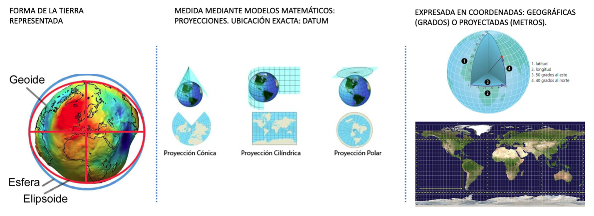
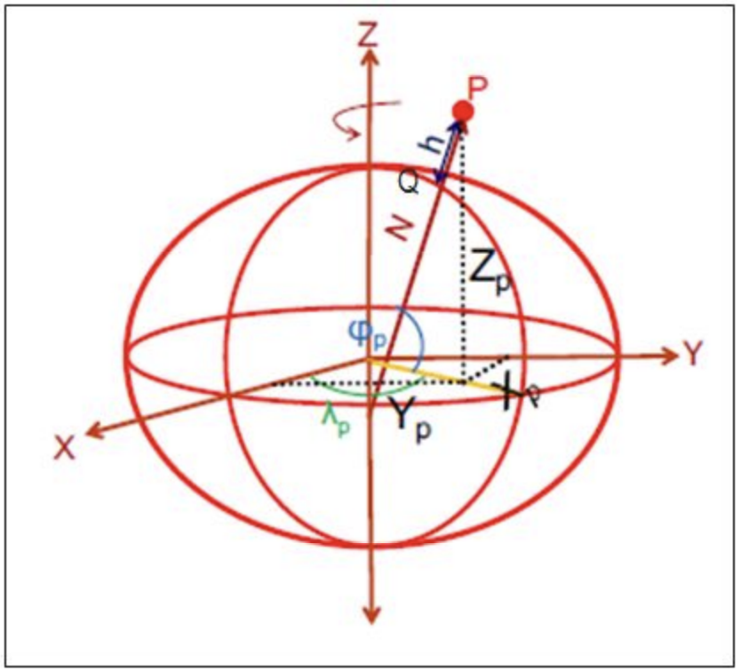
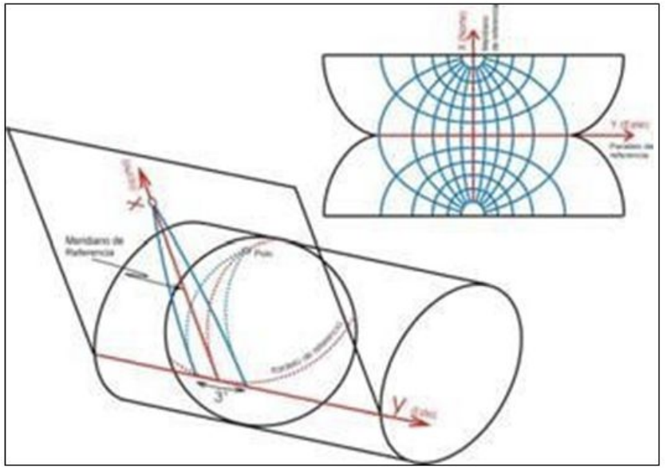

library(sf) # manipulación de datos vectoriales
library(mapview) # visualización de mapas dinámicos
library(dplyr)
library(ggplot2) # gráficos
library(RColorBrewer) #paleta de coloresCRS en R
Sistema de Referencias de Coordenadas
Sistema de Referencias de Coordenadas

Los sistemas de coordenadas forman la base de cálculo para describir la posición de un punto a partir de mediciones geodésicas: distancias, proporciones de distancias (sin escala) y ángulos. Las coordenadas nunca pueden medirse, solamente se calculan con referencia un sistema de coordenadas bien definido. Los tipos de sistemas de coordenadas principales que existen son:
- Coordenadas elipsoidales
- son la representación de las coordenadas sobre la superficie de un elipsoide determinado, se representan por [φ, λ, h] siendo respectivamente, la latitud, longitud y altura elipsoidal.

- Coordenadas proyectadas o cartográficas
- Según la proyección empleada las coordenadas elipsoidales pueden representarse en un plano, en el caso de Chile continental, se emplea la proyección Universal Transversal de Mercator (UTM), huso 19 y huso 18.

Para hacer reproyecciones en R, se le tiene que asignar el Sistema de Referencia de Coordenadas de dos formas, uno como cadena de texto ("+proj=longlat +datum=WGS84 +no_defs") o como número que corresponde a EPSG (EPSG es el acrónimo de European Petroleum Survey Group) que representan sistema de referencia de coordenadas también.
Para el caso de Chile usamos dos sistemas de referencias de coordenadas:
- Coordenadas elipsoidales (geodésicas):
-
4326 o
"+proj=longlat +datum=WGS84 +no_defs" - Coordenadas proyectadas (métricas):
-
32719 o
"+proj=utm +zone=19 +south +datum=WGS84 +units=m +no_defs"
Reproyectar Vectores
Lectura de Vectores
las_condes_mz <- st_read("data/shape/icv_las_condes.shp", quiet=T) LC_mz_32719 <- las_condes_mz %>% st_transform(32719)
st_crs(LC_mz_32719)Coordinate Reference System:
User input: EPSG:32719
wkt:
PROJCRS["WGS 84 / UTM zone 19S",
BASEGEOGCRS["WGS 84",
ENSEMBLE["World Geodetic System 1984 ensemble",
MEMBER["World Geodetic System 1984 (Transit)"],
MEMBER["World Geodetic System 1984 (G730)"],
MEMBER["World Geodetic System 1984 (G873)"],
MEMBER["World Geodetic System 1984 (G1150)"],
MEMBER["World Geodetic System 1984 (G1674)"],
MEMBER["World Geodetic System 1984 (G1762)"],
MEMBER["World Geodetic System 1984 (G2139)"],
MEMBER["World Geodetic System 1984 (G2296)"],
ELLIPSOID["WGS 84",6378137,298.257223563,
LENGTHUNIT["metre",1]],
ENSEMBLEACCURACY[2.0]],
PRIMEM["Greenwich",0,
ANGLEUNIT["degree",0.0174532925199433]],
ID["EPSG",4326]],
CONVERSION["UTM zone 19S",
METHOD["Transverse Mercator",
ID["EPSG",9807]],
PARAMETER["Latitude of natural origin",0,
ANGLEUNIT["degree",0.0174532925199433],
ID["EPSG",8801]],
PARAMETER["Longitude of natural origin",-69,
ANGLEUNIT["degree",0.0174532925199433],
ID["EPSG",8802]],
PARAMETER["Scale factor at natural origin",0.9996,
SCALEUNIT["unity",1],
ID["EPSG",8805]],
PARAMETER["False easting",500000,
LENGTHUNIT["metre",1],
ID["EPSG",8806]],
PARAMETER["False northing",10000000,
LENGTHUNIT["metre",1],
ID["EPSG",8807]]],
CS[Cartesian,2],
AXIS["(E)",east,
ORDER[1],
LENGTHUNIT["metre",1]],
AXIS["(N)",north,
ORDER[2],
LENGTHUNIT["metre",1]],
USAGE[
SCOPE["Navigation and medium accuracy spatial referencing."],
AREA["Between 72°W and 66°W, southern hemisphere between 80°S and equator, onshore and offshore. Argentina. Bolivia. Brazil. Chile. Colombia. Peru."],
BBOX[-80,-72,0,-66]],
ID["EPSG",32719]]Reproyectar Raster
El archivo ráster ya tiene definido su sistema de referencia de origen (UTM 19S, EPSG:32719). Con terra::project() lo transformamos a coordenadas geográficas WGS 84 (EPSG:4326), conservando sus ocho bandas.
library(terra)
las_condes_raster <- rast("data/raster/OLI_LC.tif")
names(las_condes_raster) <- c("aerosol", "blue", "green", "red" , "nir", "swir1", "swir2", "tirs1")
las_condes_rasterclass : SpatRaster
size : 449, 562, 8 (nrow, ncol, nlyr)
resolution : 30, 30 (x, y)
extent : 350505, 367365, 6293905, 6307375 (xmin, xmax, ymin, ymax)
coord. ref. : WGS 84 / UTM zone 19S (EPSG:32719)
source : OLI_LC.tif
names : aerosol, blue, green, red, nir, swir1, ...
min values : 8465, 7604, 6500, 5924, 5520, 5191, ...
max values : 19119, 20517, 21248, 23237, 29344, 30012, ...crs_latlon <- "EPSG:4326" # coordenadas geográficas o elipsoidales
las_condes_raster2 <- terra::project(las_condes_raster, crs_latlon)
las_condes_raster2class : SpatRaster
size : 409, 606, 8 (nrow, ncol, nlyr)
resolution : 0.000302661, 0.000302661 (x, y)
extent : -70.60908, -70.42566, -33.48626, -33.36247 (xmin, xmax, ymin, ymax)
coord. ref. : lon/lat WGS 84 (EPSG:4326)
source(s) : memory
names : aerosol, blue, green, red, nir, swir1, ...
min values : 8525.768555, 7688.330566, 6616.679199, 6117.143066, 6129.486816, 5666.844238, ...
max values : 18629.787109, 19889.853516, 20757.240234, 22576.816406, 28876.076172, 25861.087891, ...